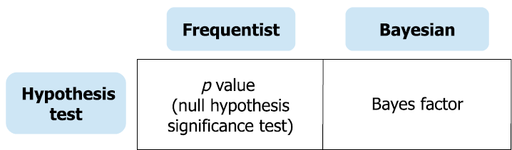

Chapter 3 Intro to Bayes Factor
When looking at solving a problem by comparing two models, we can take a frequentist approach or a Bayesian approach. If we are trying to decide if it’s worth it to get this new fertilizer for our plants we will need to gather some data. A frequentist would conduct an experiment and would look at the data and the p-value to make a decision. After collecting data using the new fertilizer, we see that our plants’ health has increased. The p-value would be the probability of seeing this observed increase in plants’ health assuming that the null hypothesis (that the fertilizer has no effect) is true. In this case they are only taking into account the results of their experiment. A Bayesian would also conduct an experiment but in addition would consider their prior beliefs. Together the prior beliefs and the data will help them reach a more accurate evaluation of the plants’ health; the posterior belief. A Bayes Factor, the ratio of the posterior odds to prior odds, will inform them which hypothesis is more likely under the data. Each time that new data is observed, the initial posterior belief will become the new prior belief. Using this, Bayesians can continue to incorporate new data to keep their beliefs and Bayes Factor up to date. For these reasons, we want to use a Bayesian approach for our problem.

3.1 A Bayes Walkthrough
Bayes Factor is a Bayesian alternative to classical hypothesis testing. It is used to compare two statistical models (e.g. \(H_0\) to \(H_1\)) often displayed as a likelihood ratio between the two. It is useful because we are able to update the ratio as new information is gathered which cannot be done under frequentist hypothesis methods. \(\\\)
\[ \begin{aligned} \textit{ Likelihood }H_k & = \frac{\textit{ Posterior }H_k}{\textit{ Prior }H_k}\\ \\ \textit{Bayes Factor } & = \frac{\textit{ Likelihood }H_1}{\textit{ Likelihood }H_0}\\ \\ & = \frac{\frac{\textit{ Posterior }H_1}{\textit{ Prior }H_1}}{\frac{\textit{ Posterior }H_0}{\textit{ Prior }H_0}}\\ \\ & = \frac{\textit{ Posterior }H_1}{\textit{ Prior }H_1} \cdot \frac{\textit{ Prior }H_0}{\textit{ Posterior }H_0}\\ \\ & = \frac{\textit{ Posterior }H_1}{\textit{ Posterior }H_0} \cdot \frac{\textit{ Prior }H_0}{\textit{ Prior }H_1}\\ \\ & = \frac{P(H_1|\textit{ data})}{P(H_0|\textit{ data})} \cdot \frac{P(H_0)}{P(H_1)}\\ \\ & = \textit{ Posterior Odds} \cdot \frac{1}{\textit{Prior Odds}}\\ \\ \textit{Bayes Factor } & = \frac{\textit{ Posterior Odds}}{\textit{Prior Odds}} \end{aligned} \] Now that we have some background and some useful equations we can start using this to solve our fertilizer question. We are trying to decide if it’s worth it to get this new fertilizer for our plants. Let’s define our null hypothesis as the event that the fertilizer has no effect on our plants.\(\\\)
\[ \begin{aligned} H_0 =\textit{ Fertilizer has no effect} \\ \end{aligned} \]
Our alternative hypothesis would be that the fertilizer has a good effect on our plants (this is a one-sided alternative hypothesis).\(\\\)
\[ \begin{aligned} H_1 =\textit{Fertilizer has a good effect} \\ \end{aligned} \]
Now let’s state our beliefs; these will be our priors for our hypothesis. Maybe we don’t have that much faith in the fertilizer, so we believe there is a \(60\%\) chance it doesn’t have an effect on our plants and only a \(40\%\) chance it does have an effect on our plants.\(\\\)
\[ \begin{aligned}\textit{ Prior }H_0 = 0.6 \\ \textit{ Prior }H_1 = 0.4 \\ \end{aligned} \] We start our experiment by measuring our plants’ health before adding any fertilizer. Since we are a botanist after-all, we can measure our plants’ photosynthesis process, leaf greenness, and oxygen production. These stats will make up our data which we will call plant stats. These will be used to update our prior beliefs into posterior beliefs after the experiment. After weeks of using the fertilizer, we measure our plant stats again, and using this data, we can now define our posterior beliefs. Almost all of our plants are doing better. Wow, maybe this fertilizer really works! We now believe that the probability of the fertilizer not working is \(20\%\), and the probability of it working is \(80\%\).\(\\\)
\[ \begin{aligned}\textit{Posterior }H_0 = P(H_0 | \textit{ plant stats}) = 0.2 \\ \textit{Posterior }H_1 = P(H_1 | \textit{ plant stats}) = 0.8 \\ \end{aligned} \] Now we can use our data to calculate a Bayes Factor by plugging it into formula (1) from above: \[ \begin{aligned} \textit{Bayes Factor } & = \frac{P(H_1| \textit{ plant stats})}{P(H_0|\textit{ plant stats})} \cdot \frac{P(H_0)}{P(H_1)}\\ & = \frac{0.8}{0.2} \cdot \frac{0.6}{0.4}\\ & = 6 \end{aligned} \] A Bayes Factor of 6 means the alternative is 6 times more likely than the null. But what does this mean…
3.2 Interpreting The Ratio
A great thing about a Bayes Factor is that there is no threshold or value on which to accept or deny anything. It’s up to whoever is using the Bayes to decide what the value means to them.\(\\\) \(\\\) For example now that you know that the new fertilizer is 6 times more effective than not using fertilizer, would you invest in the fertilizer? That is up to you to decide based on your own situation. Given that you are an expert botanist and your plants are already beautiful, healthy, and thriving, even if this new fertilizer is 6 times more effective, this number may not be significant enough for you to change your routine when you have no problems as is. Let’s say your friend however enjoys visiting your house because of all the beautiful plants and has decided to start their own botanical garden. As an amateur botanist, your friend has been having trouble keeping their plants healthy and half of them have died already. They might have a different reaction to the same information that the fertilizer is 6 times more effective. Given that they have not been very successful in growing a botanical garden, the fertilizer could be a game changer for their journey of raising plants. \(\\\) \(\\\) In general if the Bayes Factor (set up as \(\frac{LikelihoodH_1}{Likelihood H_0}\)) is greater than one, this means the alternative hypothesis is more likely than the null hypothesis by that factor. If it is less than one, that means the null hypothesis is more likely than the alternative. In the latter we can flip the ratio to get the factor by which the null is more likely than the alternative. In the case that a Bayes Factor is one, this indicates that both models are equally likely.
3.3 Likelihood Approach to find a Bayes Factor
In our above example we used simple values for our posterior and priors to get a Bayes Factor. But as you may have noticed the Bayes Factor can also be found using likelihood equations. A Bayes Factor is a weighted average likelihood ratio based on the prior distribution specified for the hypotheses. Since Bayes Factors are an extension of likelihood ratios, lets learn a little about likelihoods and their ratios!\(\\\) \(\\\) \(\underbrace{\dfrac{p(H_{0}|E,\textit{D})}{p(H_{1}|E,\textit{D})}}_{\text{Posterior Odds}}= \underbrace{\dfrac{p(E|H_{0},\textit{D})}{p(E|H_{1},\textit{D})}}_{\text{Likelihood Ratio}} \cdot \underbrace{\dfrac{p(H_{0}|\textit{D})}{p(H_{1}|\textit{D} )}}_{\text{Prior Odds}}\) \(\\\) In this equation we see the likelihood ratio multiplied by the prior odds is equal to the posterior odds. If we divide both sides of the equation by the prior odds we get posterior odds divided by the prior odds are equal to the likelihood ratio. This means the Bayes Factor is the same as the likelihood ratio. \(\\\) When the hypotheses are simple, say \(H_0 = 5\), and \(H_1 = 6\), we can find the Bayes Factor by finding the posterior odds and dividing that by the prior odds as done in the plant example above. However, this method will not work if our hypotheses are a range of numbers, say \(H_0 \leq 5\) and \(H_1 \geq 5\). In this case, we must integrate in order to find all possibilities of the hypotheses. We will use equation:
\[ \begin{aligned} P(D|H_k) = \int_0^1 P(D| \theta_k, H_k) \cdot \pi(\theta_k | H_k) d \theta \end{aligned} \] Where \(P(D|H_k)\) is the integrated likelihood\(\\\) \(P(D| \theta_k, H_k)\) is the probability density\(\\\) \(\pi(\theta_k | H_k)\) is the prior density (\(\pi\) as a function), and\(\\\) \(D\) as the observed data\(\\\) \(\\\) Finding \(P(D | H_0)\) and \(P(D | H_1)\) by using equation (2), we can find the two likelihood equations and then take the ratio of these to calculate a Bayes Factor. The Bayes Factor is equal to the likelihood ratio.
3.3.1 What is Likelihood?
A likelihood equation measures how well a statistical model fits a sample of data for different values of unknown parameters. Likelihood is proportional to a probability; it is not a probability itself. For example, the likelihood of a hypothesis given data is proportional to the probability of that data given the hypothesis is true multiplied by any positive constant: \(L(H|D) \propto P(D|H)K\). A big difference between likelihood and probability is the interpretation of what is what can vary. For conditional probabilities, the hypothesis is fixed while the data varies: \(P(D|H)\). Likelihood equations however, predict the likelihood of a hypothesis occurring conditioned on fixed data: \(L(H|D)\). \(\\\)
The Law of Likelihood states that “within the framework of a statistical model, a particular set of data supports one statistical hypothesis better than another if the likelihood of the first hypothesis, on the data, exceeds the likelihood of the second hypothesis” (Etz). The value of a single likelihood is meaningless; only in comparing likelihoods, as we do for a Bayes Factor, do we find meaning.